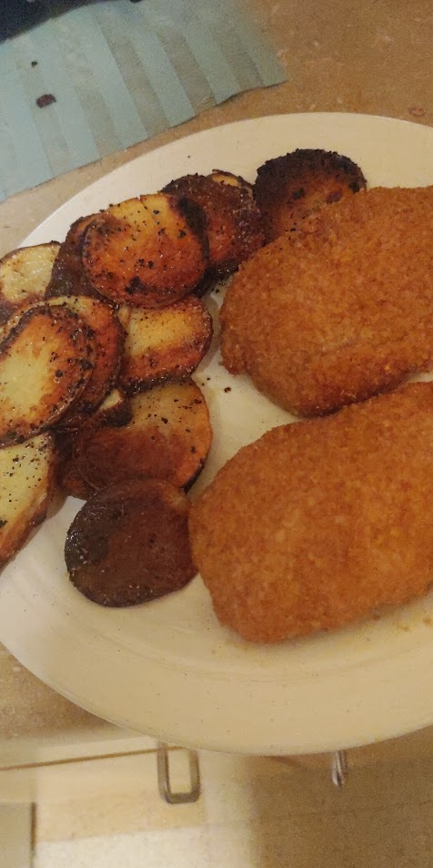

Fried Potatoes Recipe

This is one of my favorite side dishes to make. It pairs nicely with the Shake 'n' Bake Chicken recipe also found on this website.
Ingredients:
- A potato (preferably a less starchy variety)
- Some bacon fat
- Seasonings (garlic powder, salt, pepper, paprika)
Steps:
- Heat the bacon fat under medium heat for 5 or so minutes, until it's moving smoothly.
- While the bacon fat is heating, slice your potato into slices about a quarter inch thick at maximum.
- Put the potatoes in the pan with the bacon fat, add seasonings.
- After about 7 or so minutes, flip the potatoes over, add seasonings again.
- Once the top side is looking nice and crisp, you're all done! Take them out of the pan.
Home